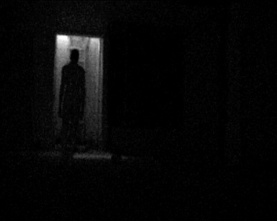

El Nombre que Nunca Debiste Decir

En una biblioteca vieja encontré un cuaderno con un solo nombre escrito cientos de veces: Hedrún.
Nunca lo había escuchado.
Sonaba raro, gutural.
Cuando lo pronuncié en voz alta, se sintió como romper algo.
Como si una cuerda tensada se soltara de golpe.
Esa noche, alguien empezó a imitar mi voz desde el pasillo.
Me llamaba suavemente, pidiendo “entrar”.
Pero mi familia estaba dormida.
A los días, la voz empezó a sonar desde dentro de mi propia habitación.
No puedo ver quién la hace, pero sé que eso no es una persona.
Sin embargo, insiste, repitiendo el nombre una y otra vez.
Y tengo miedo del día en que responda.